【场景】武当山顶·味绝峰 | 远景·航拍感 | 清晨
武当山深处，有一座连本地人都不知道的小峰。
山上没有道观，只有一间厨房。
【场景】味绝峰厨房 | 特写·手部 | 晨光
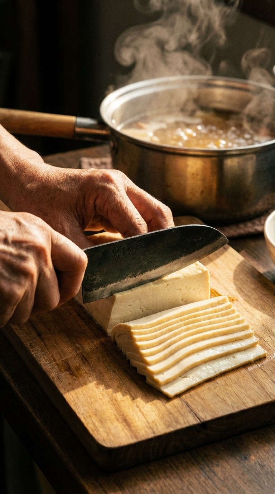
一把黑铁厨刀划过豆腐，刀起刀落间——
豆腐丝细如发丝，透光如绸。
唰——
【场景】味绝峰厨台 | 中景·动态 | 清晨
二十三岁的陈小刀，味绝峰第十七代唯一传人。
别人练武用剑，他练武用菜刀。
【场景】竹屋内 | 中近景 | 油灯暖光
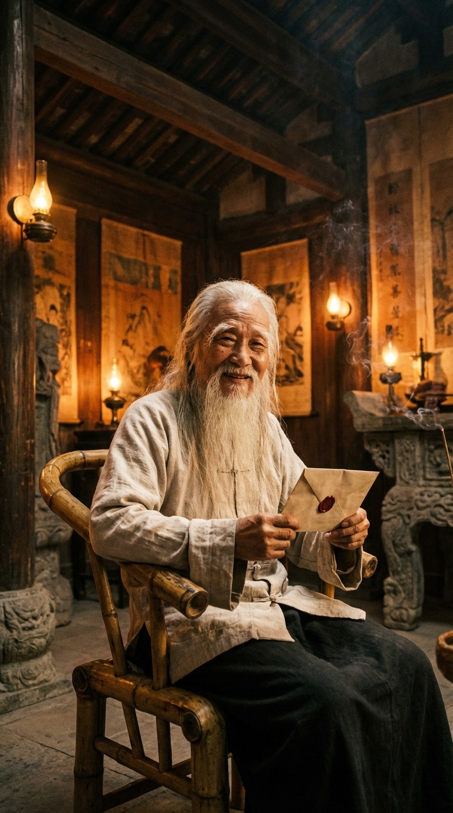
（他不知道师父说的"天下"不是江湖……）
【场景】武当山石阶 | 全景·俯拍 | 雾气
陈小刀背上布包，腰别黑铁厨刀，踏上下山的石阶。
他以为山下还是马车和客栈。
【场景】山脚公路 | 中景·正面 | 白天
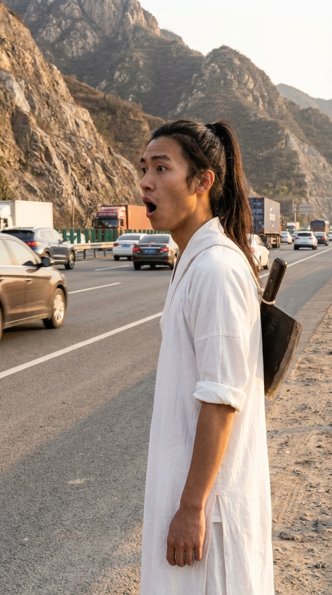
嗡嗡嗡——
一排铁盒子正以不可思议的速度从面前飞过。
【场景】路边停车位 | 中近景·侧面 | 日光
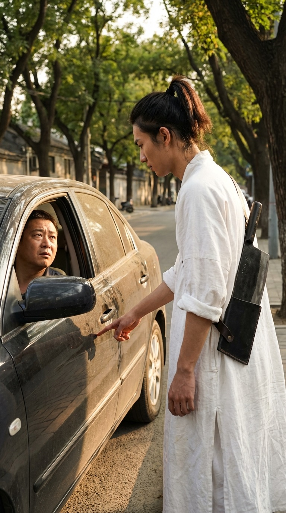
陈小刀小心翼翼地伸出一根手指，戳了戳一辆停着的汽车。
（车里的司机一脸懵：这人什么毛病？）
【场景】城市街头 | 全景·仰拍 | 午后
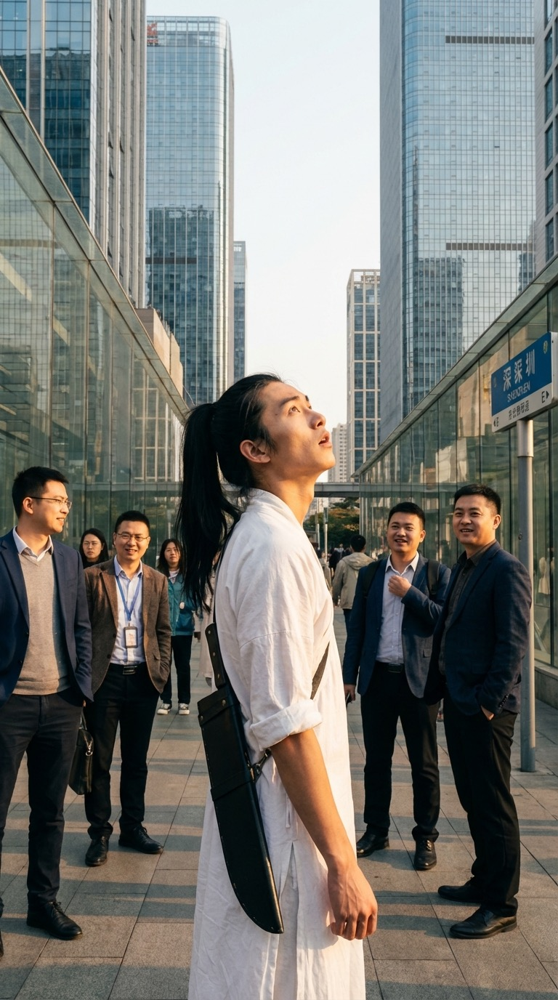
高楼大厦，霓虹闪烁，人群如潮水。
陈小刀仰头看着摩天大楼，嘴巴合不拢。
【场景】超市入口 | 中景·正面 | 室内灯光
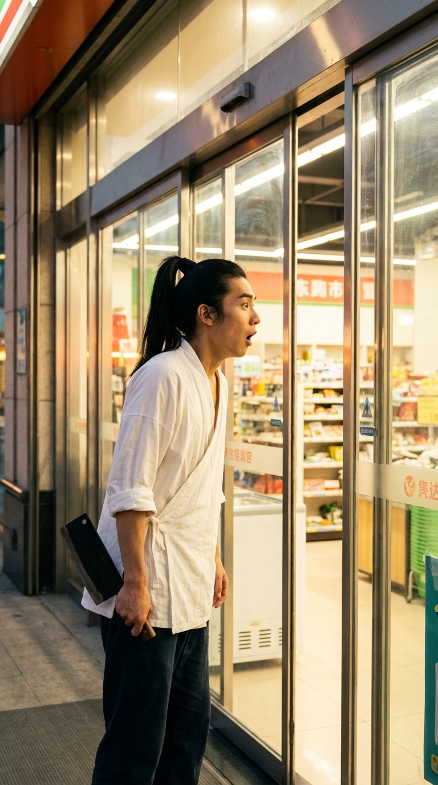
自动门"嘶——"地打开。
他下意识把手按在了厨刀柄上。
（保安：又一个……）
【场景】超市蔬果区 | 中景·跟拍 | 明亮
他的眼睛亮了。
陈小刀
天……天底下竟有如此多的食材！！这个绿的是什么？这个红的呢？这个……怎么是方形的？！
（他拿的是一块西瓜……）
【场景】超市海鲜区 | 近景·对视 | 蓝色灯光
海鲜区。
陈小刀蹲在水箱前，和一只波士顿龙虾进行了长达三分钟的对视。
【场景】超市熟食区 | 近景·面部特写 | 灯光
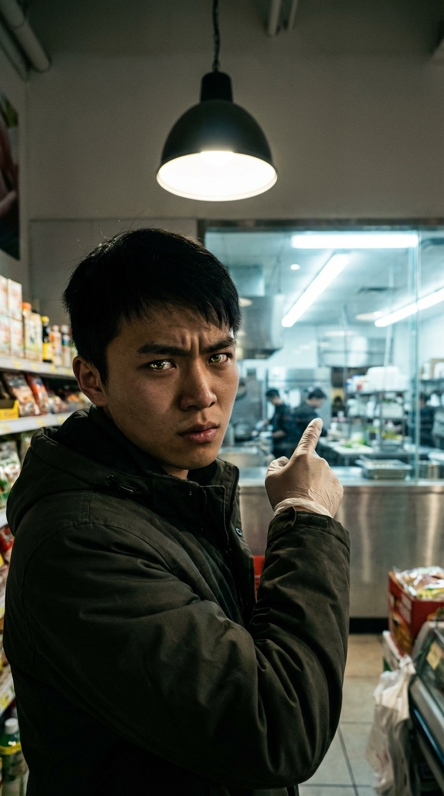
熟食区大姐抬起头，看了看这个穿道袍背菜刀的年轻人。
熟食区大姐
小伙子，这是超市，不是擂台。卤鸡腿八块一个，要不要？
【场景】美食街 | 全景·广角 | 夜晚霓虹
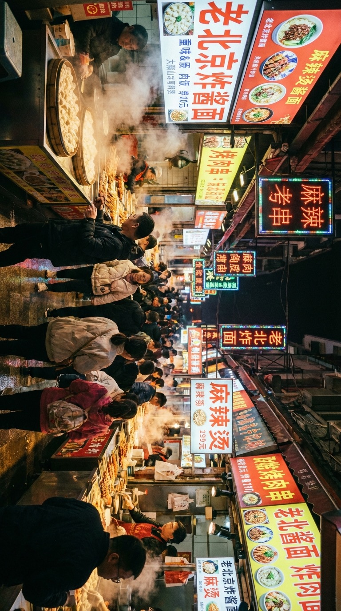
夜幕降临。
陈小刀循着香气，走进了一条灯火通明的美食街。
烟火气扑面而来——这里才是他认识的江湖。
【场景】烧烤摊前 | 中景·侧面 | 炭火光
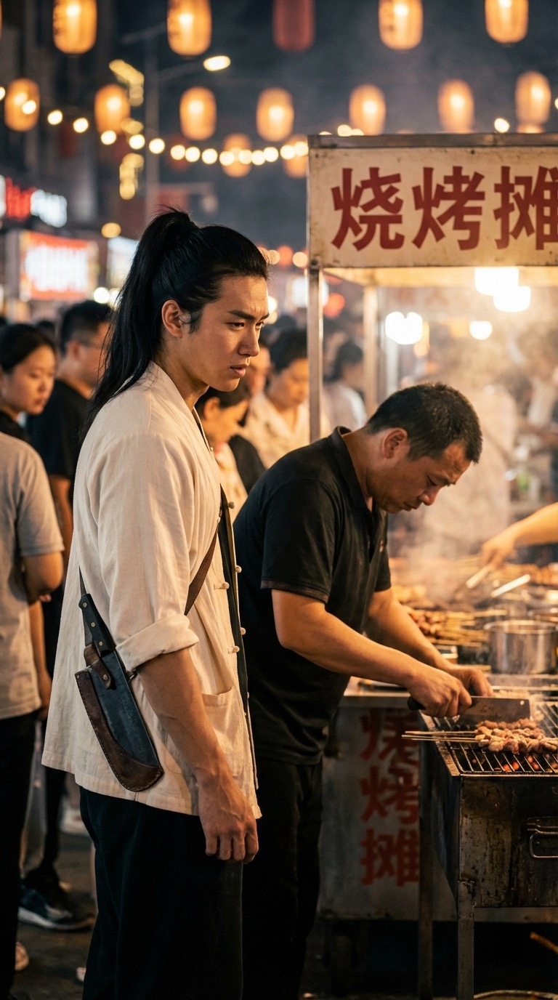
一个烧烤摊老板正在费力地切羊肉。刀钝，肉碎，汁水四溅。
陈小刀看得眉头紧皱，如同亲眼目睹暴殄天物。
（这刀法……简直是对食材的侮辱！）
【场景】烧烤摊 | 中近景·动态 | 夜市灯光
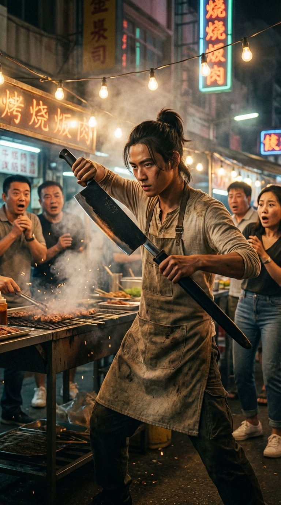
铿——！
黑铁厨刀出鞘，寒光一闪。
周围的食客"哗"地退后三步。
【场景】烧烤摊案板 | 特写·微距 | 暖光
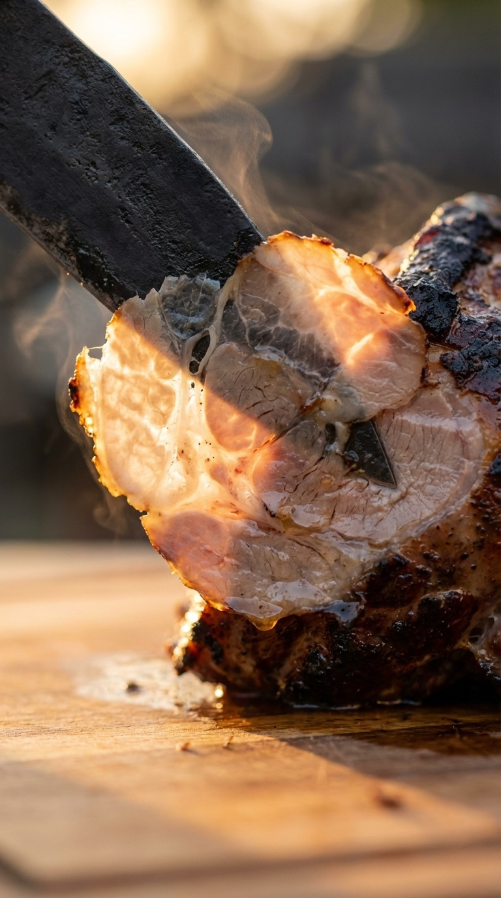
刀落。
羊肉被切成薄如蝉翼的片，一片片重叠在砧板上，透光如纸。
空气安静了三秒。
【场景】烧烤摊 | 中景·低角度 | 夜市灯
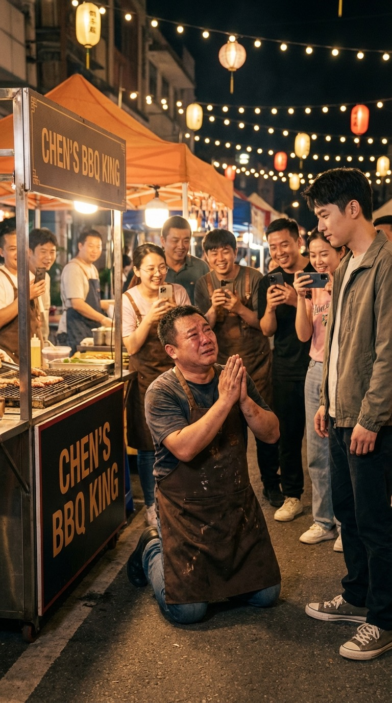
扑通——
【场景】烧烤摊围观 | 全景·俯拍 | 手机光
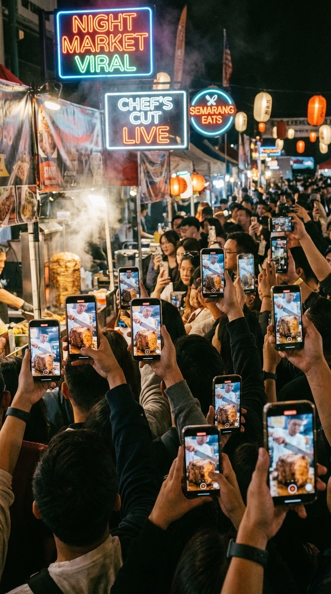
然后——所有人都举起了手机。
闪光灯此起彼伏，比过年的烟花还热闹。
【场景】手机屏幕 | 特写·UI界面 | 数字
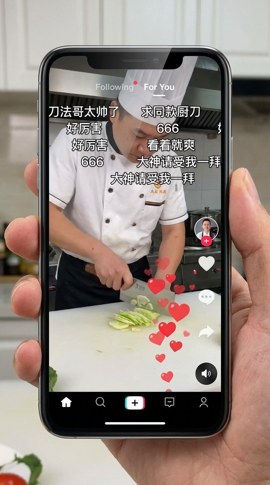
当天晚上，"刀法哥"的视频冲上热搜。
播放量：一百万。点赞：五十万。
评论区炸了——
"这是特效吧？""求同款厨刀链接！""这哥们是从古代穿越来的？"
【场景】公园长椅 / 手机屏幕 | 分割构图 | 夜
陈小刀对此一无所知。
他正躺在公园长椅上，枕着黑铁厨刀，打呼噜。
互联网上，一场风暴正在酝酿。
【场景】网红工作室 | 中景·正面 | 专业灯光
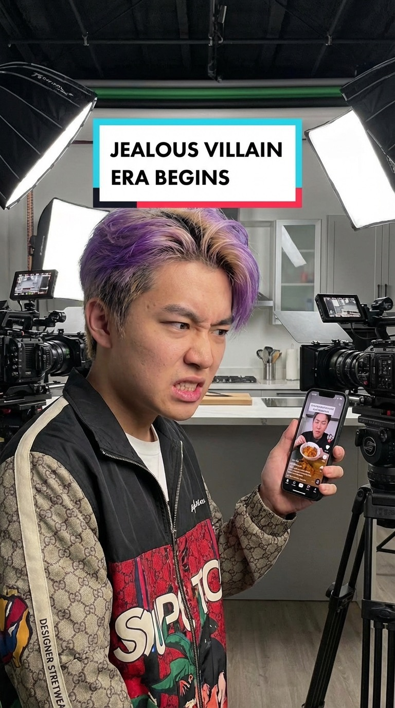
全网粉丝三千万的美食博主"厨王小杰"也看到了这个视频。
他嘴上不屑，手指却在发抖——因为他看出来了，那一刀的功力远在他之上。
【场景】工作室 | 近景·指向镜头 | 补光灯
厨王小杰
刀法哥？不管你是谁，我厨王小杰正式向你发起挑战！不服来战！
视频发出三分钟，热搜第一。
全网沸腾："刀法哥 vs 厨王小杰"
【场景】商场中庭 | 大全景·俯拍 | 舞台灯
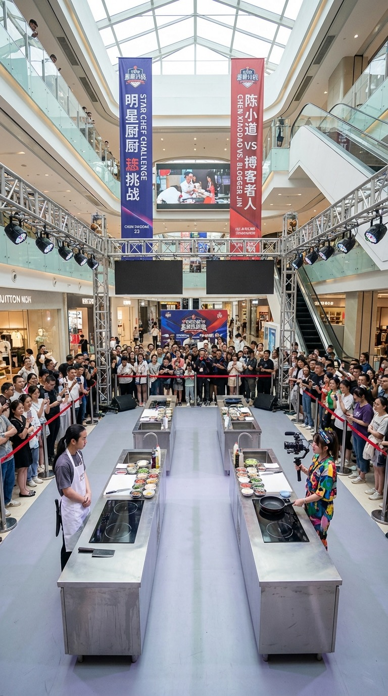
三天后。北京某商场中庭。
两个灶台面对面，上百名观众围在护栏后。手机、摄影机、直播设备密密麻麻。
陈小刀是被烧烤摊老板连拉带拽弄来的。他至今不知道"直播"是什么意思。
【场景】灶台旁 | 近景·人物肖像 | 舞台灯
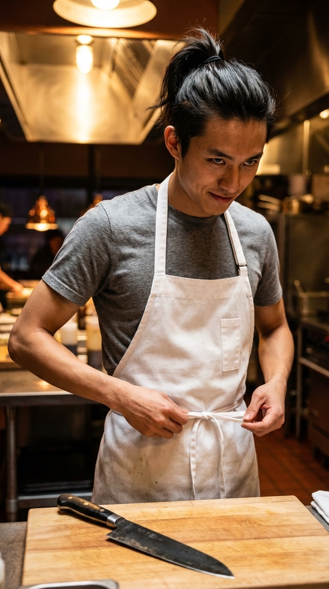
陈小刀换上了白围裙。
黑铁厨刀平放在案板上，刀面映出他平静的眼神。
（师父，弟子第一次在山下比武……不，比厨。）
【场景】灶台 | 动态·低角度 | 火光
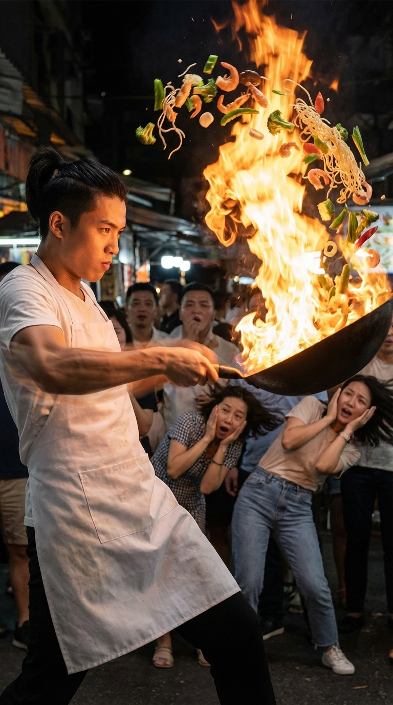
轰——！！
他单手举起铁锅，内力灌注锅底——
火苗窜起三米高，食材在空中翻飞旋转，精准落回锅中。
前排观众被热浪吹得头发飘起。
【场景】灶台 | 特写·食物 | 暖色调
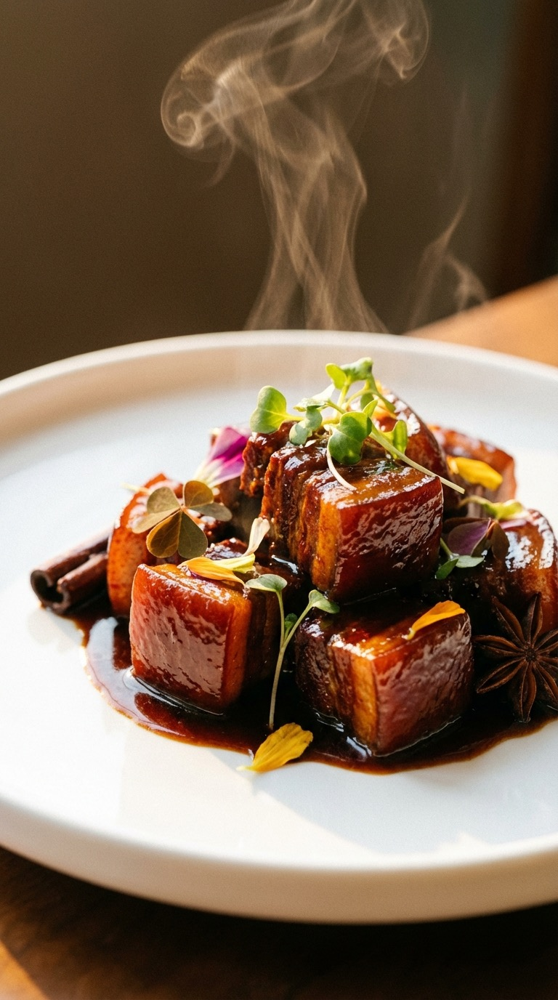
十五分钟后。
一道红烧肉端上桌——色泽如琥珀，酱汁在灯光下缓缓流淌，香气弥漫整个商场。
三楼卖衣服的店员都探出了头。
【场景】评委桌 | 中景·对比构图 | 自然光
厨王小杰的菜也端了上来——摆盘精致、技法纯熟，像教科书一般完美。
但评委们的身体不由自主地……偏向了陈小刀那边。
鼻子是骗不了人的。
【场景】商场外 | 低角度·仰拍 | 阴影
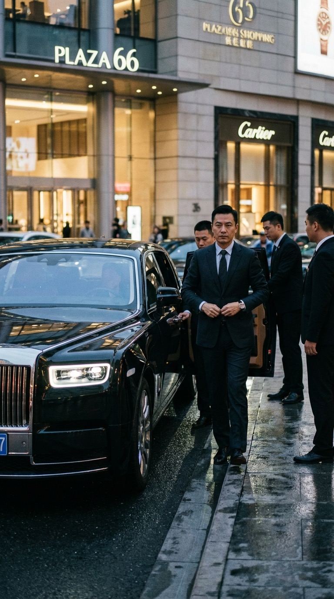
就在结果即将揭晓时——
一辆黑色迈巴赫停在商场门口。
米其林三星主厨赵天成，缓步走入。
他笑得很客气，眼神却像在看一块待宰的食材。
【场景】灶台旁 | 中近景·递名片 | 舞台灯
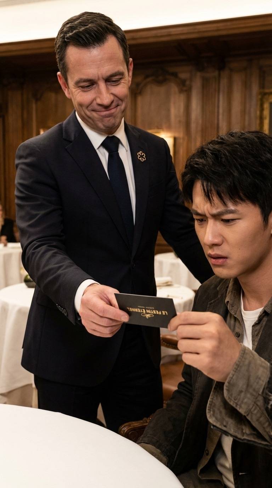
赵天成
年轻人，好刀法。来我的餐厅吧——年薪五百万，不是问题。
陈小刀接过名片，翻来覆去看了半天。
（名片是英文的……）
【场景】灶台旁 | 近景·面部 | 侧光
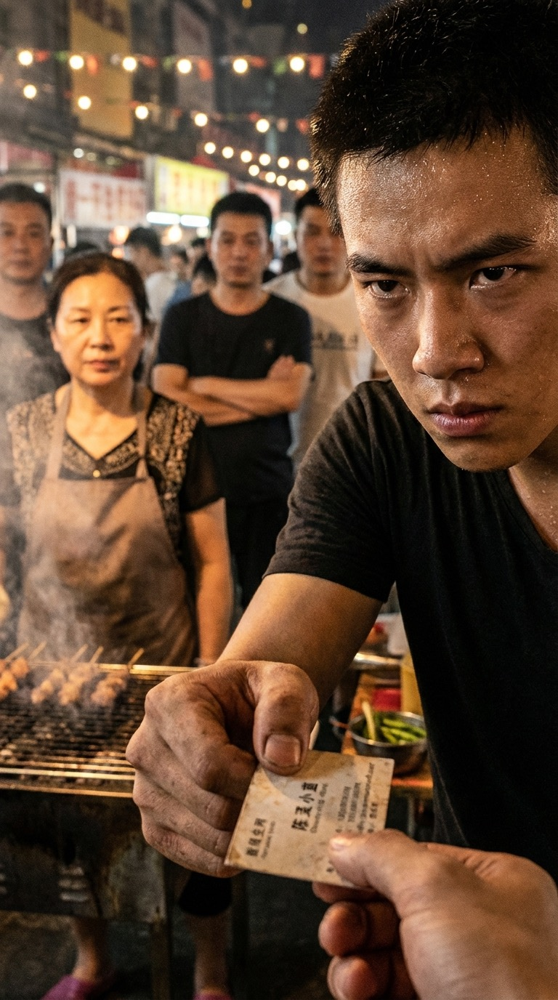
陈小刀把名片还了回去。
陈小刀
味绝峰的厨艺不卖。师父教过我，做饭是修行，不是生意。
身后，烧烤摊老板和夜市的摊贩们不知什么时候已经站在了他身后。
【场景】商场走廊 | 背影·远去 | 暗调
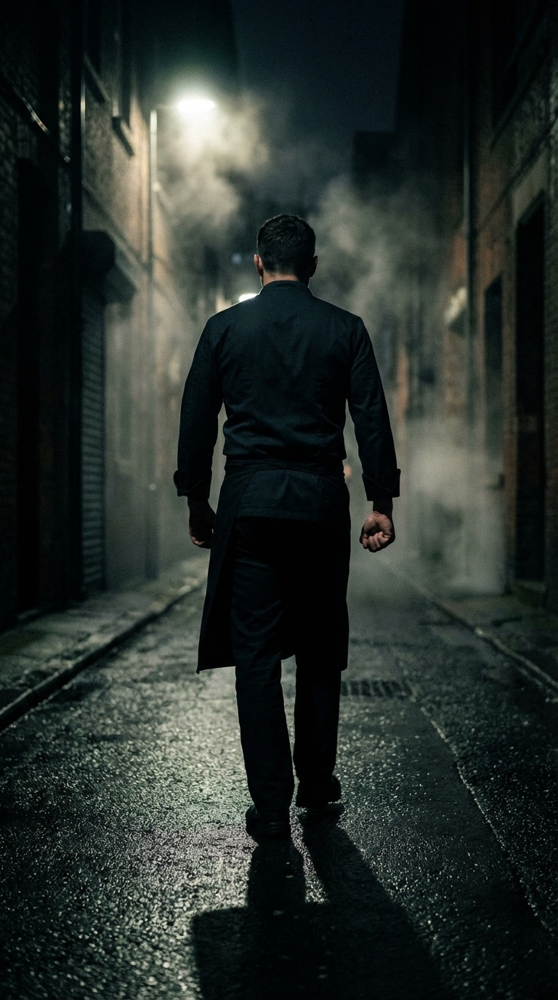
赵天成笑了笑，转身离开。
他的拳头在西装口袋里悄悄攥紧。
（一场更大的风暴即将来临……）
【场景】屋顶 | 中景·月光 | 蓝色调
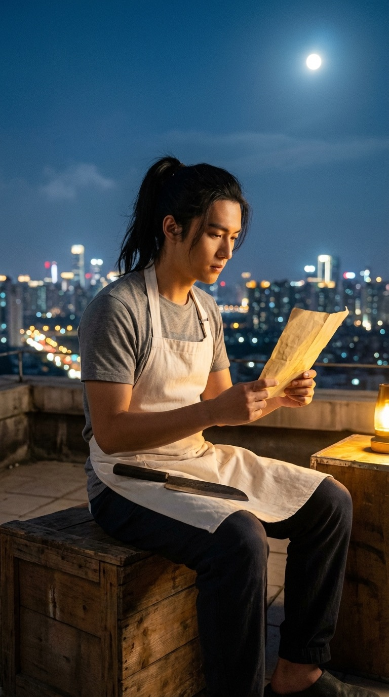
深夜。
陈小刀坐在天台上，借着月光，打开了师父留下的那封信。
信上只有一个地址——北京，某条胡同，某个门牌号。
和一行字："去那里，你会找到答案。"
【场景】北京胡同 | 全景·纵深 | 午后暖光
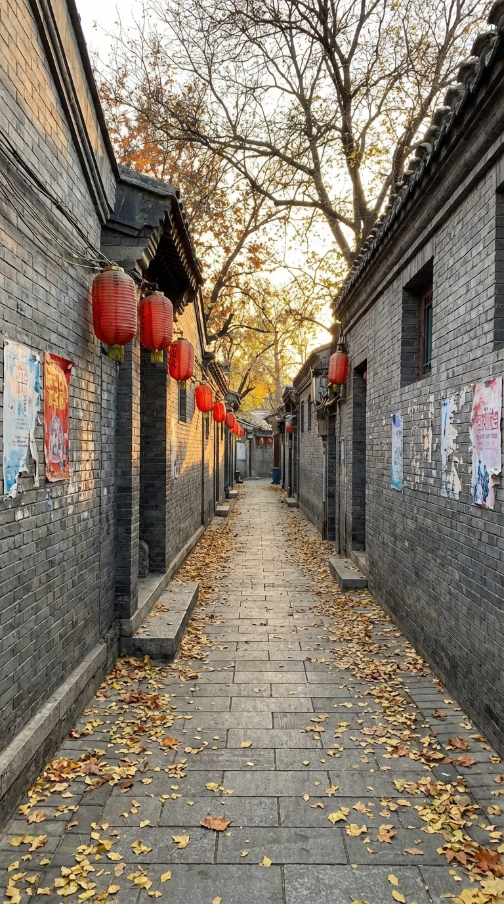
第二天，他按照地址找到了一条安静的胡同。
灰砖墙、红灯笼、落叶满地。
和北京其他地方不一样——这里安静得像另一个时空。
【场景】老餐馆门口 | 中景·正面 | 逆光
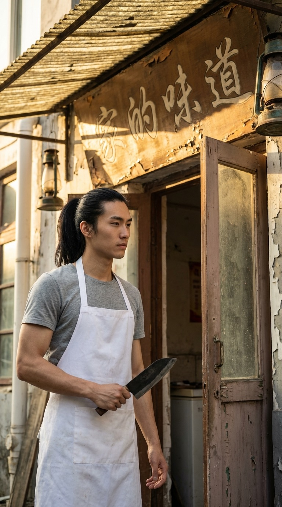
胡同尽头，是一家关了不知道多少年的老餐馆。
木门半掩，招牌上的字已经看不清。
但阳光恰好落在牌匾上，像一个无声的邀请。
【场景】餐馆内部 | 全景·光影 | 尘埃暖光
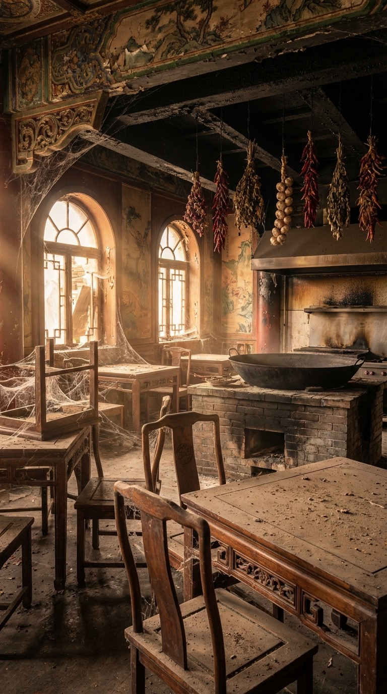
推门而入。
灰尘、蛛网、倒塌的桌椅——但厨房还在。一口巨大的铁锅，挂满了干枯的香料。
这里曾经是一家很了不起的餐馆。
【场景】餐馆墙壁 | 特写·手部 | 暖光
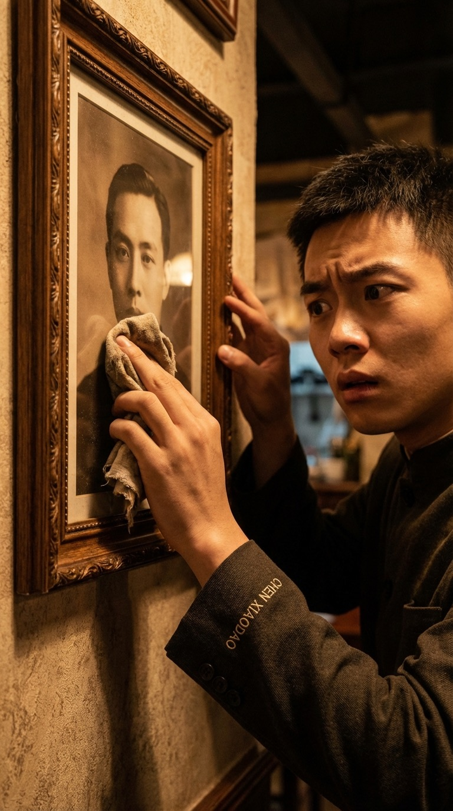
墙上有一个相框，落满了灰。
陈小刀伸手擦去灰尘——
然后，他愣住了。
【场景】老照片 | 特写·定格 | 泛黄暖调
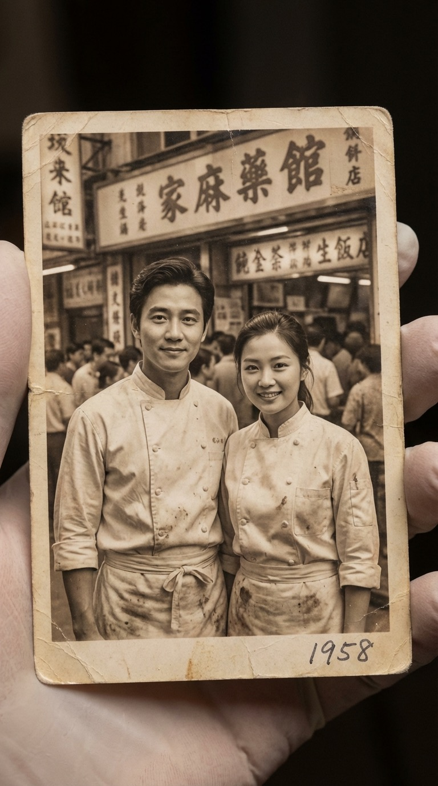
照片里——
年轻时候的师父，穿着厨师服，笑得意气风发。
旁边站着一个美丽的女人，也穿着厨师服。
身后是这间餐馆——当年宾客盈门、热气腾腾的样子。
（师父……原来你曾经在这里……）
【场景】餐馆中央 | 全景·人物居中 | 金色晨光
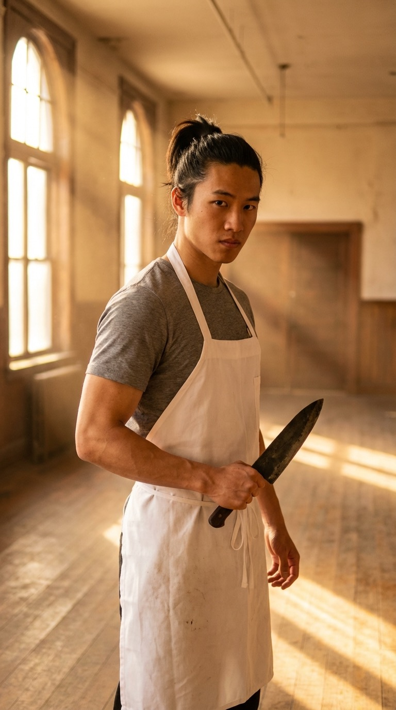
陈小刀站在空荡荡的餐馆中央。
晨光穿过破窗洒进来，照在他和黑铁厨刀上。
他握紧了刀。
第一章 · 完
师父的秘密……那个女人是谁？
赵天成会如何报复？
"刀法哥"的爆火会带来什么？
—— 第二章 · 胡同里的厨王 ——
敬请期待